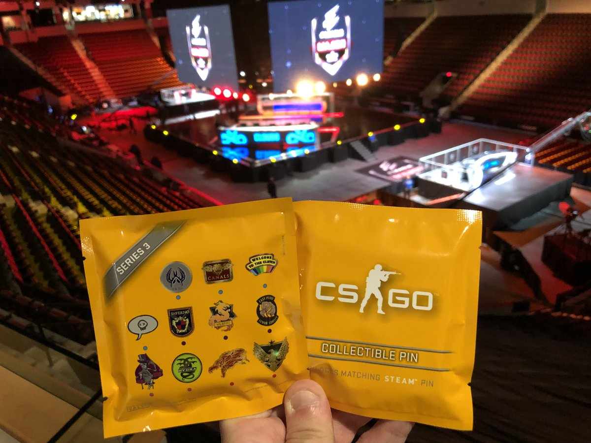

Adjusting the trading scenes
2018.03.29
Valve has just released a new update that is drastically going to change the trading community. Once an item is exchanged between players, the item will not be tradeable for 7 days.
This is the same as items purchased in-game or via the Steam Community Market. The reason for this change is to reduce the negative aspects of trading like fraud and scamming.
Series 3 pins – Now available online and in-game
2018.03.29
Attendees of the Boston Major had the first opportunity to purchase Series 3 collectible pins. Like Series 1 and Series 2, the latest set of physical pins come with a matching Genuine in-game display item for your CS:GO profile.
Physical Series 3 pins are now available at WeLoveFine. If you’re only interested in the digital version, Series 3 Collectible Pin Capsules are also available as in-game offers.
Map pools for the casual player has been changed
2018.03.29

The casual map groups have been adjusted based on map playtime. Cobblestone has been moved into the ‘Delta’ Map group. Shipped and Austria have been moved into the ‘Sigma’ Map group.
We’re also adding a shortened version of Nuke to the Wingman map pool. This version of Nuke features some experimental changes to the B bomb site, so queue for a match if you’d like to get a sneak peek.
Current players : 111.111.111
New players this month : 12.345.678
Player of the week
naajzzz